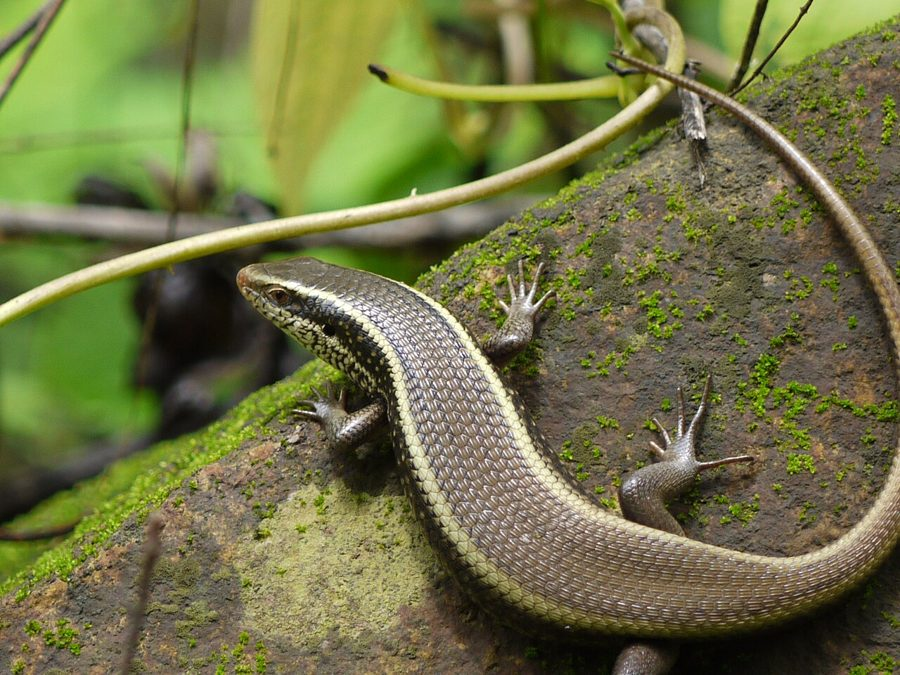

बामनिहाCommon Keeled Skink
Eutropis carinata · Scincidae · REP-0014

- Scientific name
- Eutropis carinata (Schneider, 1801)
- Family
- Scincidae
- Hindi
- बामनिहा
- Status here
- native
- IUCN
- LC
When to look कब देखें
Present all year.
बामनिहा / Common Keeled Skink
Eutropis carinata (Schneider, 1801) — Scincidae
बामनिहा (कॉमन कील्ड स्किंक) — बगीचों, खेतों और सूखी पत्तियों के ढेरों में पाया जाने वाला एक मध्यम आकार का छिपकली-वर्ग का जीव है। इसका शरीर बेलनाकार (cylindrical) और चमकीला कांस्य-भूरा (bronze-brown) होता है, जिसके किनारों पर हल्के पीले रंग की पट्टियां होती हैं। इसकी पीठ की शल्कों पर बारीक धारियां (keeled scales) होती हैं, जो इसे छूने पर खुरदरा अहसास कराती हैं। पूर्वी उत्तर प्रदेश में इसे स्थानीय तौर पर "बामनिहा" या "बामनी" कहा जाता है। यह एक अत्यंत फुर्तीला जीव है जो धूप सेकना (basking) पसंद करता है और दिन के समय सूखी पत्तियों में खड़खड़ाहट करते हुए कीड़े-मकोड़ों का शिकार करता है। ग्रामीण इलाकों में इसे गलती से विषैला मान लिया जाता है, जबकि यह पूरी तरह से विषहीन और मनुष्यों के लिए हानिरहित है।
Quick Identification त्वरित पहचान
| Feature | Description |
|---|---|
| Form | Cylindrical, heavy-bodied lizard with short, well-developed limbs; tail is long and tapers |
| Colour | Shiny bronze-brown or olive-brown above, with a pale yellow lateral band running from snout to tail |
| Scales | Dorsal scales are overlapping and carry 3–5 distinct ridges (keels), giving a rough appearance |
| Head | Shiny, covered with large symmetrical shields; snout is pointed |
| Eyes | Clear, with round pupils and well-developed, movable eyelids |
| Behaviour | Diurnal, fast-running ground dweller; makes a loud rustling noise in dry leaves when running |
Field tip: Look for a shiny bronze lizard basking on mud walls or dry leaves in garden corners during sunny mornings. It runs with a characteristic side-to-side wiggle. Completely harmless.
Lizard vs. Snake Distinction
Citizen scientists in Basti often misidentify skinks as young snakes or believe them to be highly toxic "double-headed" reptiles. Use these features to identify them correctly:
- Limbs: Skinks possess four small, functional legs with five clawed toes on each foot. Snakes are completely limbless.
- Eyelids: Skinks have movable eyelids and blink regularly. Snakes lack eyelids; their eyes are covered by a transparent scale (spectacle) and are always open.
- Ear Openings: Skinks have visible, external ear openings on the sides of the head behind the eyes. Snakes have no external ear openings.
- Tail autotomy: Skinks can drop their tail defensively (autotomy) when grabbed, which continues to wiggle to distract predators. Snakes cannot drop their tails.
Morphology आकारिकी
Biometrics (typical measurements for adult specimens in dry garden spaces of eastern UP):
| Measurement | Range |
|---|---|
| Snout-vent length (SVL) | 70–95 mm |
| Tail length | 110–150 mm |
| Weight | 30–60 g |
Dorsal pattern: The dorsal surface is bronze, olive, or golden-brown. Two distinct pale yellow or whitish bands run along the upper sides of the body, starting behind the eyes. In breeding males, the flanks (sides of the body) turn bright orange or reddish-orange, and the throat may show yellow or orange markings. The belly is uniform cream or light yellow.
Scales: Dorsal scales are arranged in 30–34 rows at midbody, each scale carrying 3 to 5 distinct longitudinal ridges (keels). The head is covered with large, smooth, symmetrical shields.
Tail: The tail is longer than the head and body combined, rounded in cross-section, and tapers gradually. It contains a weakness plane allowing defensive autotomy.
Behaviour & Ecology व्यवहार और पारिस्थितिकी
Diurnal ground-dwelling basker.
- Basking habit: Relies on external heat (ectothermic). Spends early mornings basking on mud walls, dry stone piles, or exposed tree roots to raise its body temperature before hunting.
- Foraging strategy: Active hunter. Searches through leaf litter, using its keen sight and sense of smell to locate insect prey. The movement through dry leaves creates a distinctive rustling sound.
- Escape behavior: If threatened, it quickly dashes into rock crevices, rodent burrows, or under dense garden debris. If captured by the tail, it sheds the tail to escape.
Ecological Role पारिस्थितिक भूमिका
Insect population regulator. The Common Keeled Skink is a valuable insectivore in garden ecosystems. It consumes beetles, grasshoppers, crickets, termites ([SFL-0001 Deemak]), and caterpillars, keeping garden and agricultural pest populations in check. It also serves as an important food source for birds of prey and small mammalian predators.
Life Cycle / Phenology जीवन चक्र
- Breeding: Breeding peaks in the pre-monsoon season (March–May). Males display bright orange lateral colors and territorial behavior, bobbing their heads to attract females.
- Reproduction: Oviparous (egg-laying).
- Egg-laying: The female lays a clutch of 6 to 20 small, white, oval-shaped eggs in damp soil, under decaying leaf piles, or beneath rotting wood during July–August.
- Hatching: The eggs hatch in 30–45 days. The hatchlings are about 3.5–4.5 cm in total length and are immediately active.
Host Plants or Prey आहार
Insectivorous diet:
- Primary prey: Grasshoppers, crickets, beetles, cockroaches, termites, and insect larvae.
- Alternative prey: Earthworms, spiders, scorpions, and occasionally small geckos.
Predators / Natural Enemies शत्रु
- Birds: Herons, egrets (
[BRD-0029 Cattle Egret]), owls, and shrikes ([BRD-0037 Long-tailed Shrike]) are major predators. - Snakes: Common Kraits (
[REP-0006 Common Krait]) and young cobras actively hunt skinks. - Mammals: Small Indian Civets (
[MAM-0012 Small Indian Civet]) and Mongooses ([MAM-0002 Mongoose]).
Agricultural / Human Relevance कृषि प्रासंगिकता
Natural pest controller. Keeled skinks are highly beneficial in household gardens and agricultural fields as they consume crop-damaging insects and termites. Despite their benefit, they are sometimes killed by local residents due to superstitious beliefs that their lick is poisonous (an entirely false myth). Education on their harmless, insect-eating nature is key to their conservation in Basti.
Expected Locally स्थानीय रूप से अपेक्षित
Not a field record. Written from published accounts for eastern Uttar Pradesh. No confirmed local sighting yet — if you have seen it, that is what the atlas needs.
अभी तक स्थानीय पुष्टि नहीं। यह विवरण प्रकाशित स्रोतों से है, किसी अवलोकन से नहीं।
Commonly seen in the dry leaf litter of mango orchards (aam ke bagicha) and around compost pits in Vikramjot and Harraiya blocks of Basti district. They are also frequent visitors to household backyards, basking on clay roofs and mud walls.
Distribution वितरण
Global range: Distributed across South Asia, including India, Nepal, Bangladesh, Sri Lanka, and the Maldives.
In India: Widespread throughout the plains and peninsular hills.
In Uttar Pradesh: Abundant in all rural and suburban districts.
In Basti district / eastern UP: Common resident in all blocks.
Research Questions शोध प्रश्न
- Does the population density of Eutropis carinata in mango orchards differ between organic farms and pesticide-sprayed groves in Basti? / बस्ती में जैविक आम के बागों बनाम कीटनाशक-छिड़काव वाले बागों में बामनिहा स्किंक की संख्या में क्या अंतर है?
- What is the average regeneration time for a lost tail in adult Eutropis carinata under local climate conditions? / स्थानीय परिस्थितियों में वयस्क स्किंक की टूटी पूंछ को वापस उगने में कितना समय लगता है?
- Does the orange breeding coloration of male Eutropis carinata change in intensity based on its parasite load or diet?
- What percentage of rural residents in Basti believe that skinks are venomous, and does this affect their conservation? / बस्ती में कितने प्रतिशत ग्रामीण लोग स्किंक को विषैला मानते हैं, और इसका इसके संरक्षण पर क्या प्रभाव पड़ता है?
- Can children map the basking locations of skinks in their home gardens at different times of the day? — A simple thermal biology activity.
Similar Species मिलती-जुलती प्रजातियाँ
| Species | Key Difference | हिंदी |
|---|---|---|
| Lygosoma punctata (Spotted Garden Skink) | Much smaller (SVL 40–55 mm); body is highly elongated and snake-like; legs are tiny; smooth scales with black dots forming lines. | सर्प-सर्पिणी स्किंक — छोटा आकार, सांप जैसा शरीर |
Hemidactylus flaviviridis (Yellow-green House Gecko [REP-0003]) | Nocturnal; skin is soft and covered in tiny granules (no overlapping keeled scales); tail has no lateral bands; expanded toe pads for climbing. | घरेलू छिपकली — निशाचर, खुरदरी त्वचा |
Calotes versicolor (Oriental Garden Lizard [REP-0001]) | Arboreal (climbs trees); body is laterally compressed; head has a prominent crest of spines; tail is extremely long and thin. | गिरगिट — पेड़ों पर रहने वाला, रीढ़ पर कांटे |
Taxonomy & Classification वर्गीकरण
Original description. Johann Gottlob Schneider described the Common Keeled Skink as Scincus carinatus in 1801 in Historiae Amphibiorum naturalis et literariae (Vol. 2, p. 183). The type locality was India. It was later placed in the genus Eutropis Fitzinger, 1843. The genus name Eutropis combines the Greek eu (well) and tropis (keel), describing the well-keeled scales. The specific name carinata is Latin for "keeled."
Subspecies. Monotypic — no subspecies are currently recognised.
Family and order placement. Placed in the order Squamata, suborder Sauria, family Scincidae, subfamily Lygosominae.
Phylogenetic notes. Eutropis carinata belongs to the subfamily Lygosominae, which comprises the majority of Asian and African skinks. The genus Eutropis was split from the large global genus Mabuya based on molecular and morphological evidence showing distinct evolutionary lineages.
IUCN status rationale. Listed as Least Concern (LC) by the IUCN Red List due to its wide geographic range, high population density, and high adaptability to human-altered town and village gardens. It faces no major conservation threats.
Photo Gallery फोटो गैलरी
References संदर्भ
- Schneider, J. G. (1801). Historiae Amphibiorum naturalis et literariae. Vol. 2. Frommann, Jena, p. 183. [original description]
- Smith, M.A. (1935). The Fauna of British India, Ceylon and Burma: Reptilia and Amphibia. Vol. 2 — Sauria. Taylor & Francis, London.
- Daniel, J.C. (2002). The Book of Indian Reptiles and Amphibians. Bombay Natural History Society, Mumbai.
- Mausfeld, B., et al. (2002). Molecular phylogenetics of East African and Malagasy Mabuya (Squamata: Scincidae) and its systematic implications. Systematic Biology, 51(3), 434-452.
- IUCN SSC Snake and Lizard Specialist Groups (2024). Eutropis carinata. IUCN Red List of Threatened Species.
- GBIF Occurrence Data — Eutropis carinata, South Asia (2026). GBIF taxon key: 2460829.
Source file: species/fauna/reptiles/common_keeled_skink.md